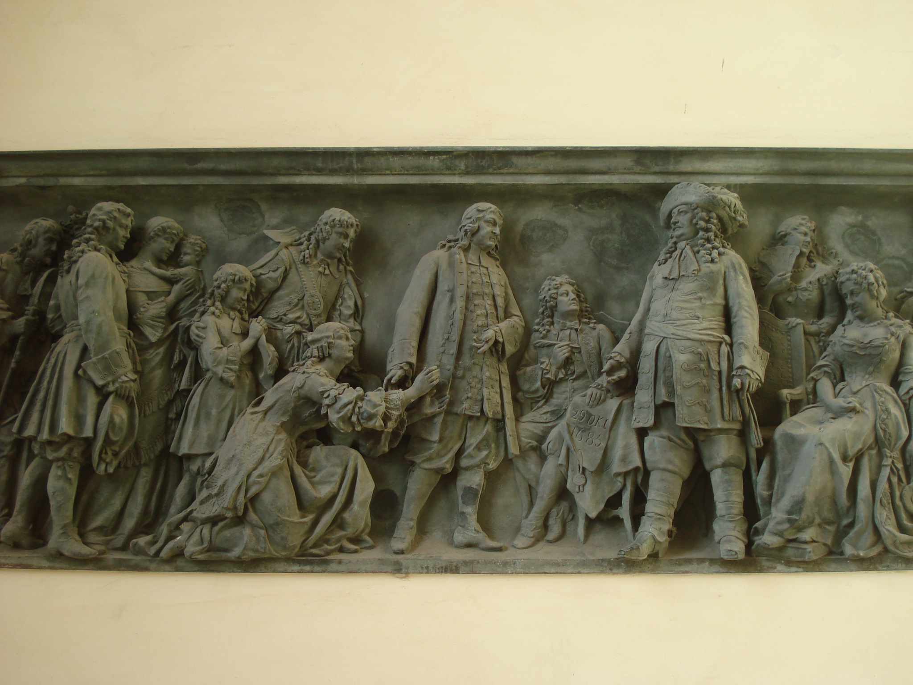
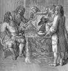
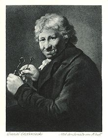
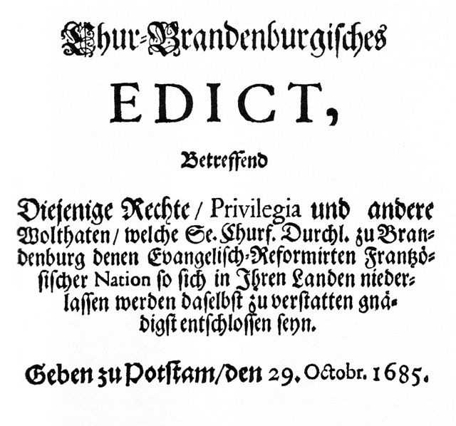
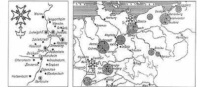
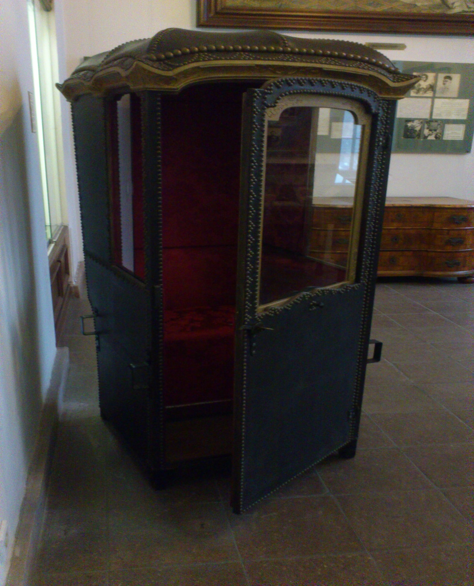

Timeline Hugenottenmuseum

1530 |
|
|

1685 |
|

1688 |
|
|

Um 1700 |
|
|

1701 |
Timeline
1530
Ab 1530 wird die Glaubensausübung der Protestanten in Frankreich, der Hugenotten, durch den katholischen Klerus und den König stark unterdrückt.
1685
Kurfürst Friedrich Wilhelm war selbst Anhänger der Reformierten Kirche. Sein 1685 erlassenes „Edikt von Potsdam“ verschaffte den Franzosen gute Startbedingungen in Brandenburg. Neben der Nächstenliebe hatte der Herrscher pragmatische Interessen: Nach dem Dreißigjährigen Krieges brauchte sein Land dringend Bevölkerungszuwachs.
 1688
Der Große Kurfürst verlieh den Hugenotten 1688 das Privileg für den Sänftenverkehr. Gegen eine „Taxe“ konnte man sich nun durch die Stadt tragen lassen. Auch Maulbeerbäume pflanzten die Hugenotten in der Stadt.

Um 1700
Die Franzosen brachten 46 neue Berufe nach Brandenburg. In Berlin wurden 21 neue Zünfte gegründet. Ihre Maschinen, insbesondere Webstühle und Werkzeuge zur Metallbearbeitung, waren den deutschen um Jahrzehnte voraus.
1701
Militärs, Wissenschaftler, Beamte, Künstler – die Franzosen bereicherten das politische und geistige Leben der Stadt. In der von Leibnitz unter König Friedrich I. 1701 gegründeten Königlich-Preußischen Akademie der Wissenschaften waren ein Drittel Franzosen.